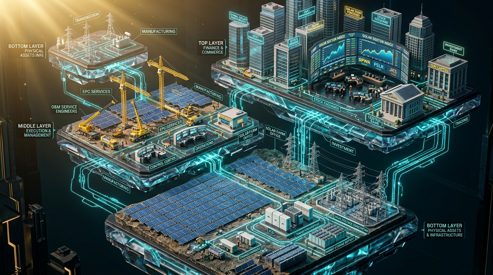

太陽光ビジネスの多層エコシステム構造図
物理資産（機器）層 ⇄ 実行・運用（EPC/O&M）層 ⇄ 資本・金融（ファンド/AM/銀行）層が有機的に連携

🔍 レイヤー別 企業検索＆カオスマップ
関心のあるレイヤーのボタンを選択、または企業名やキーワードで検索すると、主要プレイヤーの特徴とAM実務上の関わり方が確認できます。
各レイヤーの役割とAMの実務相関図
Layer 1: 発電事業者・IPP・ファンド（アセットオーナー）
発電所を最終的に所有し、売電収入や投資利回りを享受する主体です。AMはアセットオーナーから委託を受け、資産価値の最大化とリスク管理を担います。
| 区分 | 代表的プレイヤー | 特徴と動向 |
|---|---|---|
| 上場インフラファンド | タカラレーベン・インフラ、カナディアン・ソーラー・インフラ、いちごグリーン、エネクス・インフラ | 東証インフラファンド市場に上場。安定分配金を重視し、利益超過分配を活用。投資家開示や厳格なコンプライアンスが求められる。 |
| 総合商社・エネルギー大手 | オリックス、三菱商事、三井物産、丸紅、テラスエナジー（旧SBエナジー）、ENEOSリニューアブル・エナジー（ERE） | 自己資金（エクイティ）と強固な信用力でGW級のメガソーラーポートフォリオを保有。コーポレートPPAや洋上風力へも展開。 |
| 専業再エネデベロッパー | レノバ、自然電力、ウエストホールディングス | 用地開発からEPC、ファイナンスまでワンストップで手掛け、開発利益と売電収入を両立するモデル。 |
| 外資系インフラファンド | パシフィコ・エナジー、Vena Energy、Amp Energy、ブラックロック、マッコーリー | 海外年金・機関投資家の資金を背景に、日本国内で数十MW〜数百MWの特高メガソーラーを積極的に開発・買収。 |
Layer 2: アセットマネジメント（AM）＆ O&M（運用保守）
AM（総合管理）とO&M（現場管理）は車の両輪です。AMは現場のO&Mから上がってくる月次点検報告書や異常アラートを分析し、キャッシュフローやレンダーへの報告へ繋ぎます。
- 専業AM会社：プロネクサス、アポロ・キャピタル、スマートエナジー等。ファンドやSPVの出資者に代わり、レンダー対応、税務・決算、契約更新を統括。
- O&M専業・保安法人：スマートエナジー、ソーラーフロンティア、テクノ・システム、関東電気保安協会など全国の電気保安法人。草刈り・パネル洗浄から保護継電器の年次点検までを実施。
Layer 3: EPC（設計・調達・建設）
設計（Engineering）、調達（Procurement）、建設（Construction）を一括で請け負う工事会社です。完工後の「性能保証（PR保証）」や「契約不適合責任（瑕疵担保）」の請求窓口としてAM実務に直結します。
- 大手ゼネコン・エンジニアリング：大林組、清水建設、九電工、日揮、千代田化工建設等（特高変電所や山岳地の大規模土木に強み）。
- 再エネ専業EPC：自然電力、ウエストHD、エクシオグループ、大和ハウス等。
Layer 4: 主要機器メーカー（モジュール・PCS・受変電）
| 機器 | 主要メーカー | 実務上の注目ポイント |
|---|---|---|
| 太陽光モジュール | LONGi、JinkoSolar、Trina Solar、Canadian Solar、JA Solar、シャープ | 世界トップシェアは中国勢が寡占。高効率なN型TOPConやペロブスカイト開発競争。メーカー出力保証（25〜30年）の請求手続きがAM実務。 |
| PCS（インバータ） | TMEIC（東芝三菱）、Huawei（華為）、Sungrow（阳光）、SMA、日新電機 | 特高・集中型はTMEICが圧倒的。分散型ストリング型ではHuawei・Sungrowが急拡大。出力制御対応や力率一定制御機能の整定が必須。 |
| 変圧器・キュービクル | 日新電機、明電舎、富士電機、三菱電機、東芝、ダイヘン | 主変圧器やVCB（真空遮断器）。納期が長期化（1〜2年超）しやすいため、更新工事時のリードタイム管理がAMの腕の見せ所。 |
Layer 5: 金融機関・レンダー・損害保険会社
- プロジェクトファイナンス・レンダー：みずほ銀行、三井smbc、三菱UFJ、三井住友信託、SBI新生銀行、日本政策投資銀行（DBJ）、各地の有力地方銀行。
- 損害保険会社：東京海上日動火災、三井住友海上、損保ジャパン、あいおいニッセイ同和。自然災害（台風・豪雨・雪災）や盗難保険金の請求・査定交渉。
Layer 6: アグリゲーター・新電力・コーポレートPPA
FITからFIP制度への移行に伴い、市場取引代行や発電予測、インバランスリスクの吸収を担う「アグリゲーター」の存在が不可欠になっています。
- 主要アグリゲーター：東芝エネルギーシステムズ、エナリス、Next-Energy、Nature、スマートエコエナジー等。
Layer 7: テクニカルアドバイザー（TA）・法務・会計
- テクニカルアドバイザー（TA）：DNV、テュフ・ラインランド、UL Solutions、フィヒナー。資産買収時（セカンダリー）の技術デューデリジェンス（TDD）やP50/P90日射量評価レポート（IEレポート）を作成。
- 大手法律事務所：西村あさひ、長島・大野・常松、森・濱田・松本、アンダーソン・毛利・友常、ベーカー＆マッケンジー。PF契約（LMA）やプロジェクト売買（SPA）のリーガルDD。
AM視点でのパートナー選定・取引先管理の鉄則
O&M会社：緊急駆け付けと予防保全能力
故障時の「一次対応時間（SLA）」だけでなく、年次点検でのIVカーブ測定や赤外線サーモグラフィの解析精度、草刈り・除草剤散布の頻度を評価する。
機器メーカー：保証請求とサプライチェーン
25年保証があっても、メーカー自体の存続性（バンカビリティ評価・Tier 1）や、国内拠点のサポート対応体制（日本法人の有無・代替品調達速度）を確認する。
保険会社：免責金額と支払限度額
近年の水災・土砂流出の多発で免責金額（自己負担）が引き上げられています。事故時の実効補償額と融資コベナンツの整合性を毎年チェックする。